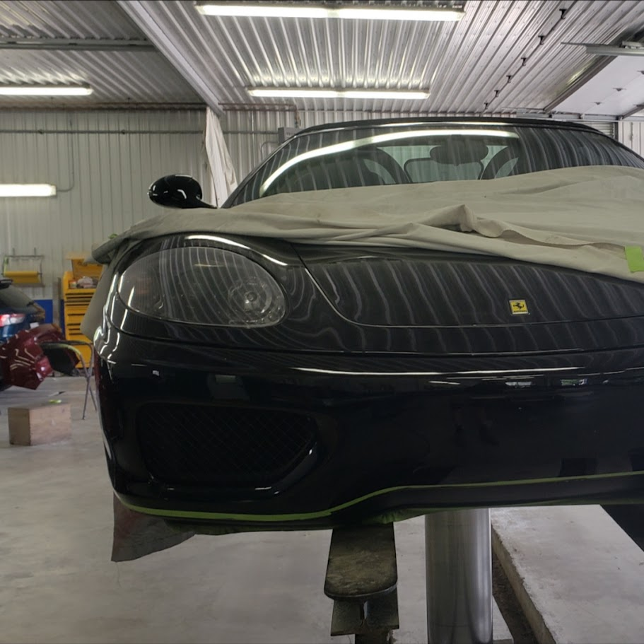

About Me
Born and raised in Ontario, Canada with a lifelong affection for automobiles. I began my career in the automotive industry at a local autobody shop in 2017. Gaining hands-on experience and knowledge, it fueled my desire to pursue a career in mechanical engineering. This led me to enroll at Confederation College through the 3 tiers of Mechanical Engineering diplomas offered, where I had the opportunity to join the college's Men's Varsity Soccer Team, and was promoted to team captain in my final year at the school. Following graduation, I enrolled in the transfer program at Lakehead University to complete my Bachelor of Mechanical Engineering.

Education

Lakehead University
Bachelor of Mechanical Engineering (2026)

Confederation College
Mechanical Engineering Technologist (2023)
Confederation College
Mechanical Engineering Technician (2022)
Confederation College
Mechanical Engineering Techniques (2021)
Projects & Experience

FSAE Aerodynamics Lead
Team Lead of Aerodynamics Sub Team. Full design, optimization, simulation and manufacturing of the front wing, nose cone, side panels and rear wing.

Mold Design Engineering
Developed engineering drawings, repair plans, and applied CMM data analysis for plastic injection molding systems.
Note: Due to protected information security, mold image is pulled from Dudley Associates Public website to represent the molds worked on at Jokey Plastics.

Automotive Engineering Experience
Performed factory quality repairs, damage estimations, customer and insurance provider interaction and shop maintenance while managing operations in a fast-paced shop environment.
Skills
Software: SolidWorks, ANSYS Fluent, AutoCAD, OptimumLap, Microsoft Office
Manufacturing: Machining Practices, Lathing, Welding
Engineering: R&D, GD&T, CMM Analysis, Data Driven Design, Simulation Driven Optimization
General: Project Management, Problem Solving, Team Leadership, Organization, Attention to Detail, Financial Focus
Awards
2022–2023 OCAA All Academic Award
2022–2023 Confederation College Honour Roll
2021–2022 OCAA All Academic Award
2021–2022 Confederation College Honour Roll
2020–2021 Confederation College Honour Roll
Official Resume
Contact Information
Email: nmzondag@gmail.com
LinkedIn: linkedin.com/in/nathanzondag
Affiliations